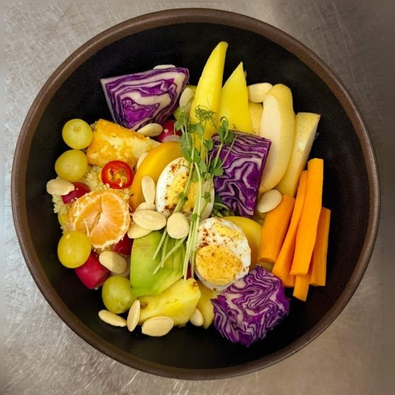
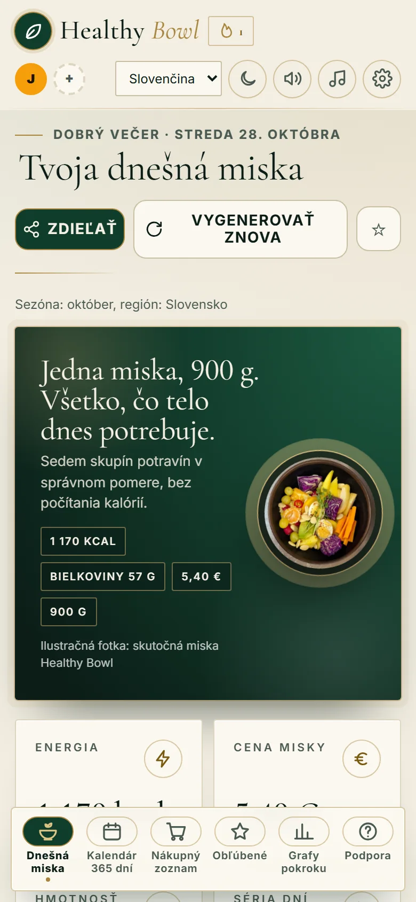
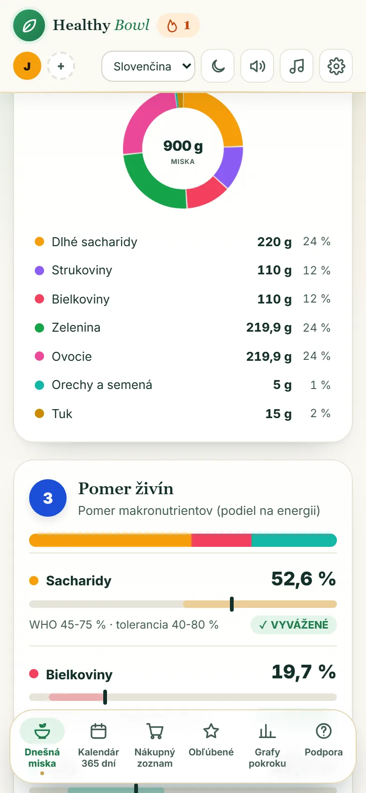
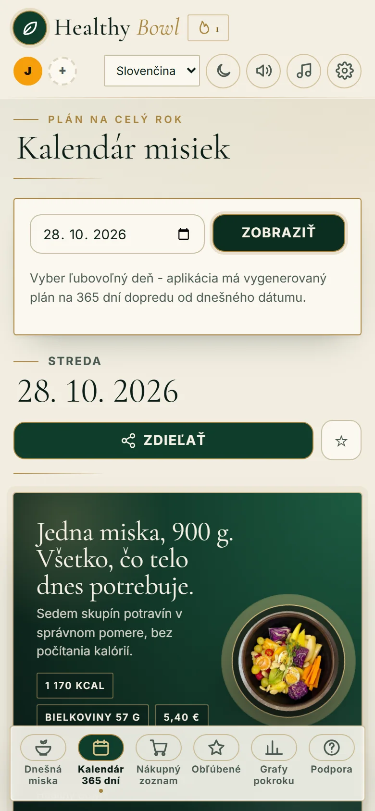
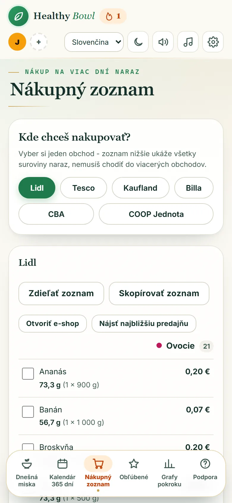
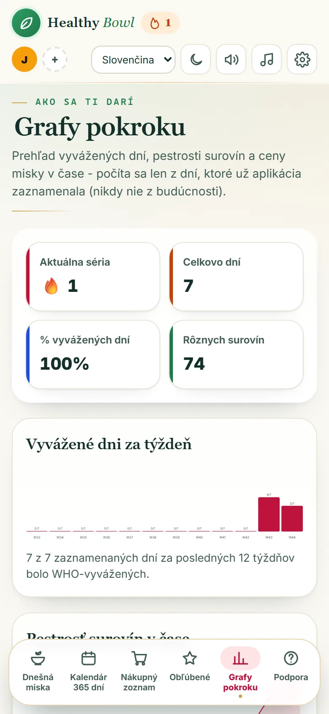
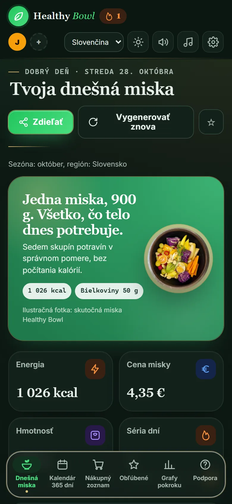

1
Otvor aplikáciu
Nič sa neinštaluje z obchodu a nepotrebuješ účet. Otvor odkaz v telefóne a pridaj si ju na plochu. Funguje ako bežná aplikácia.
Miska plná zdravia: vyvážená, každý deň iná. Makronutrienty podľa odporúčaní WHO, aplikácia ich stráži pri každej 900 g miske. Jedz sústredene, všímavo a do plna.


Otvoríš aplikáciu a máš hotovo. Zvyšok urobí Healthy Bowl za teba.
Nič sa neinštaluje z obchodu a nepotrebuješ účet. Otvor odkaz v telefóne a pridaj si ju na plochu. Funguje ako bežná aplikácia.
Každý deň jedna vyvážená miska, 900 gramov, rozdelená do siedmich skupín potravín. Vidíš každú surovinu, jej množstvo aj cenu.
Vyber týždeň a aplikácia zlúči suroviny do jedného zoznamu podľa obchodu. Odškrtávaš priamo v obchode.
Každá miska počíta s tým, čo telo denne potrebuje: dlhé sacharidy, vlákninu, bielkoviny, zeleninu, ovocie, orechy a zdravé tuky. Prejdi myšou po kruhu a pozri, čo kde je.
Hodnoty sú príklad typickej misky. Presné gramy sa menia podľa dňa a suroviny.





Videá, ktoré sme zdieľali na našej Facebook stránke.
Jedna miska denne s nepredvídateľnou kombináciou surovín, aby telo dostávalo široké spektrum vitamínov a minerálov.
Suroviny na viac dní v jednom zozname podľa obchodu. Odškrtávaj priamo v obchode.
Vidíš cenu misky aj každej suroviny. Ceny sa prispôsobia tvojmu regiónu.
Lepok, laktóza, orechy, sója, vajcia, ryby, plody mora. Vyber si, čomu sa treba vyhnúť.
Keď niečo chýba, aplikácia navrhne náhradu s podobným nutričným profilom, aby pomer ostal vyvážený.
Aplikácia uprednostní suroviny, ktoré sú práve v sezóne a dostupné v tvojom regióne.
Pri každej surovine v miske nájdeš krátky spôsob prípravy.
Každý člen domácnosti má vlastný plán, alergie aj pokrok v jednej aplikácii.
Jedným klikom vidíš, ako sa tvoje makrá držali v pásme WHO za posledný týždeň či mesiac.
Voliteľná pripomienka počas dňa, aby si nezabudol/a piť vodu.
Rozhranie, názvy surovín aj popisy prípravy sa prepnú bez reštartu.
Záznamy sa ukladajú v tvojom telefóne a aktuálna miska aj nákupný zoznam sú dostupné aj bez internetu.
Stredná cesta medzi diétou a jedlom kvôli pôžitku.
Healthy Bowl je miska v aplikácii postavená na vyrovnanom stravovaní, strednej ceste medzi diétou z nedostatku a jedlom kvôli pôžitku. Jedlo berieme len ako výživu, preto ho výrazne nedochucujeme ani prehnane neozdobujeme.
Jedz sústredene, všímavo a do plnaHealthy Bowl je webová aplikácia. Nepotrebuješ obchod ani účet, stačí odkaz.
Naskenuj telefónom a otvor aplikáciu.
healthybowl-api.onrender.com
Nezáleží na tom, v ktorej krajine si. Aplikácia hovorí 12 jazykmi a radi odpovieme na každú otázku, nápad alebo spätnú väzbu.
Otvor Healthy Bowl a pozri, čo máš dnes na tanieri. Zadarmo a bez registrácie.
Otvoriť aplikáciu